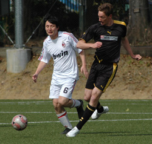
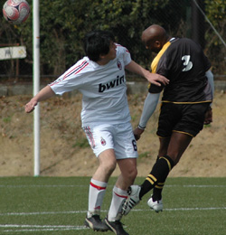
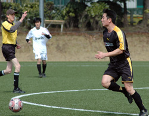

|
Setagaya Koen, Saturday 28th February
Rain, rain, more rain. That’s what I expected going out on Saturday morning to setagaya-koen’s beautiful pitch. Low and behold I was greater with a recent stranger to Tokyo, SUN! Just the walk to the pitch was great so I had high expectations for the game.
Despite the change in recent form of Y-abe Romen Benitez was not be swayed from his current formation of choice. As we warmed up some new team members of Y-abe seem to have appeared and there was a collective raised eyebrow at our illustrious leader.
He replied with his usual gruff demeanor, well as gruff as Romen can be “don’t worry lads, pass the ball play it easy, we’ll be alright”. To be honest it seemed to instil a sense of hope, especially since Y-abe had recently beaten the league toppers!
With Narita and Haneda warned to alter flight paths as Kev “Kicker” Gray was playing we began the game with our usual positive outlook, which by the way usually dwindles, flickers and then dies by the time we get to the second half!
Eventually all our subs turned up, one of them had a little adventure and went for a drive with a nice taxi man to Komazawa Park, we didn’t ask what happened!!
Anyway, the game!
We were bright, perky, quick, tight, erm thinking of more adjectives and not doing too well!! The centre of the park was controlled well with Rick and Romen taking the lion’s share of the tackles and winning the ball on a regular basis.
This prompted our wingers to move forward taking the game to Y-abe. Whatever chances Y-abe had were snuffed out pretty quickly and the defensive three cleared and controlled well with a usual stand out performance by Andy.

Now, since I am writing this nearly a week after the game I have forgotten most of what happened other than we won and pressured them, had lots of shots and defended well enough for them not to score! (The goal being a beatifully crafted free kick, curved ar inside the left post
Since we won and didn’t concede this weeks team rating is a piece of cake, everyone gets 10!!
Report by Lee Rawlinson
|